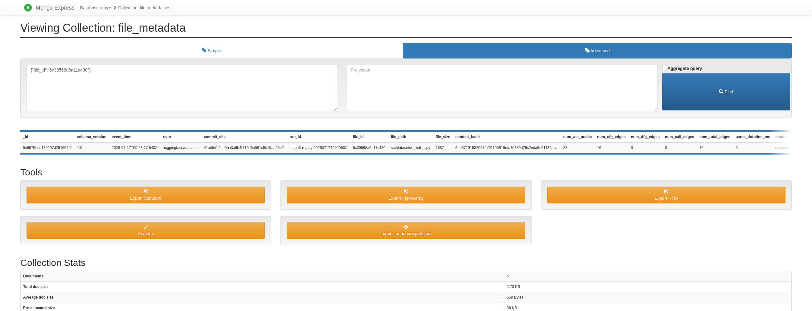

Task 5 — Spark metadata stream to MongoDB#
Evidence summary
Field |
Value |
|---|---|
Evidence source |
|
Commands |
|
Stream |
Spark consumes only |
Storage contract |
MongoDB upserts by |
Raw query output |
Approach and reasoning#
Commands: bash scripts/capture_spark_evidence.sh and bash scripts/capture_store_evidence.sh. Spark owns the metadata path only: it reads cpg.metadata, persists checkpoint state, and writes one MongoDB document per file_id. That separation keeps metadata processing independent from the Neo4j graph connector.
What this chapter proves#
Requirement |
Evidence in this chapter |
|---|---|
Spark metadata stream |
The executed output records Spark offset and metadata document counts. |
MongoDB upsert behavior |
The chapter states the |
UI-backed final state |
The Mongo Express screenshot shows the replay final state after replacement. |
from pathlib import Path
import json
ROOT = next(p for p in [Path.cwd(), *Path.cwd().parents] if (p / 'screenshots/stage2_manifest.json').exists())
manifest = json.loads((ROOT / 'screenshots/stage2_manifest.json').read_text())
mongo = manifest['metrics']['mongodb']; spark = manifest['metrics']['spark']
print('MongoDB documents:', mongo['documents'])
print('unique file IDs/paths:', mongo['unique_file_ids'], '/', mongo['unique_file_paths'])
print('duplicate file_id groups:', mongo['duplicate_file_id_groups'])
print('Spark metadata offset:', spark['metadata_offset'])
print('completed micro-batch:', spark['completed_batch'])
assert mongo['documents'] == spark['metadata_offset'] == 5
MongoDB documents: 5
unique file IDs/paths: 5 / 5
duplicate file_id groups: 0
Spark metadata offset: 5
completed micro-batch: 0
Final database UI evidence#
Database UI evidence
Field |
Value |
|---|---|
Tool |
Mongo Express |
Phase represented |
Canonical Stage 3 replay final state after metadata replacement. |
UI action/query |
Filter the target |
Run date |
|
Result |
|
Backing artifacts |
|

Reflection#
Closing reflection
Point |
Result |
|---|---|
Worked |
Spark committed offset 5 and MongoDB contained five unique metadata documents with the exact repository and dataset commit. |
Failed |
That clean run had MongoDB query artifacts but no dedicated Mongo Express capture. |
Resolution |
The canonical Stage 3 replay captured a real, hash-validated Mongo Express final-state image after replacement; it is presented above with its actual phase. Replay/idempotence remains Task 6, not a Stage 2 claim. |